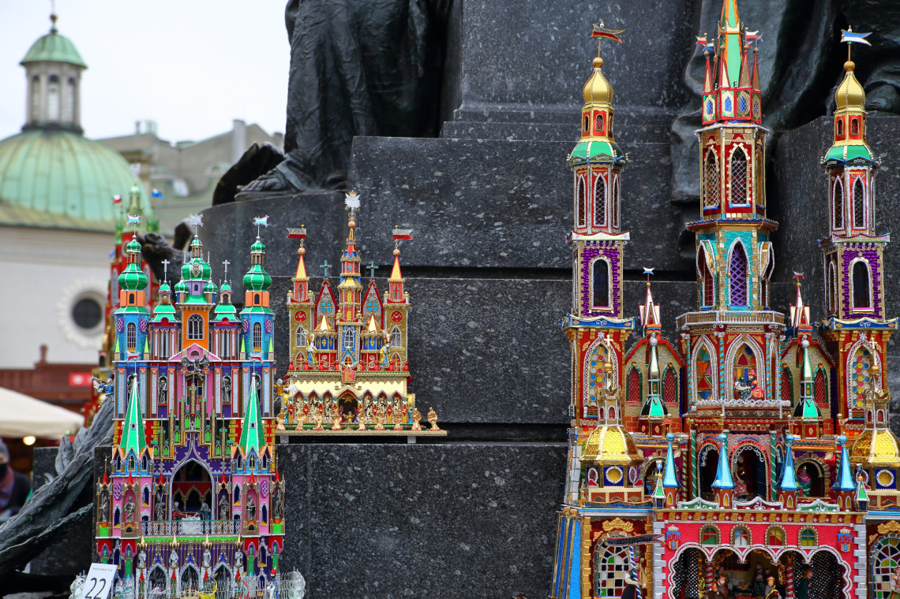
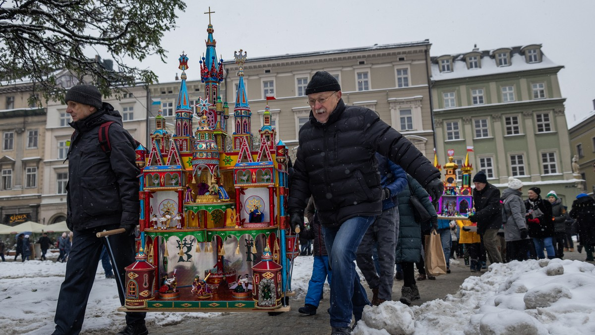
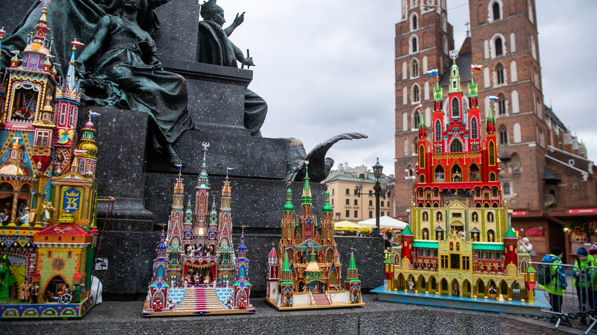
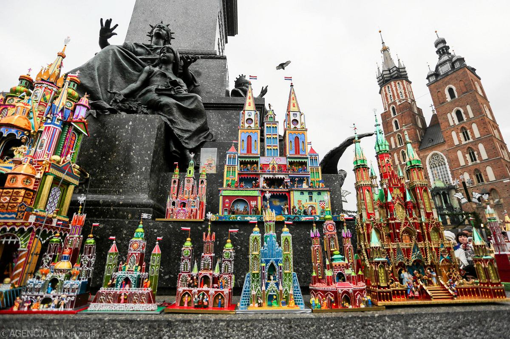
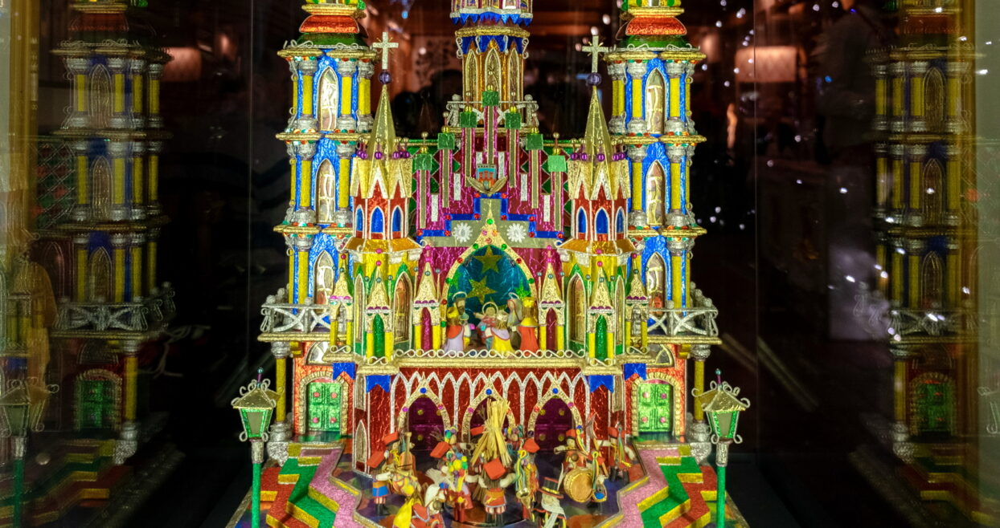

Historia krakowskich szopek bożonarodzeniowych
Tradycja budowania szopek bożonarodzeniowych w Krakowie sięga XIX wieku. Inspiracją dla ich twórców były sceny narodzenia Jezusa oraz charakterystyczna architektura Krakowa. Pierwsze szopki, wykonywane przez rzemieślników, murarzy i stolarzy, miały formę miniaturowych teatrów, które wykorzystywano podczas kolędowania. Tradycja ta szybko zyskała popularność, a szopki stały się nieodłącznym elementem świątecznego krajobrazu miasta.
Wyjątkowy charakter krakowskich szopek wynika z połączenia w nich sakralnych motywów bożonarodzeniowych z lokalnymi elementami architektonicznymi. Wśród charakterystycznych motywów pojawiają się m.in. wieże Kościoła Mariackiego, Sukiennice, czy Zamek na Wawelu. Dzięki temu szopki zyskały status unikatowego symbolu kultury i tradycji krakowskiej.


Sztuka kultywowania tradycji
Krakowskie szopki są efektem wielogodzinnej, precyzyjnej pracy, która często angażuje całe rodziny. Twórcy szopki, zwani szopkarzami, korzystają z różnorodnych materiałów – od kartonu i drewna, po kolorową folię i szkło. Szopki są bogato zdobione, a wiele z nich posiada ruchome elementy, podświetlenia czy mechanizmy odgrywające kolędy.
Sztuka ta jest przekazywana z pokolenia na pokolenie. Młodsze pokolenia szopkarzy uczą się od starszych nie tylko technik budowy, ale także znaczenia symboliki i wartości, które kryją się za tą tradycją. W ten sposób krakowskie szopki pozostają żywą częścią lokalnej kultury.
Konkurs Szopek Krakowskich
Konkurs Szopek Krakowskich to jedno z najbardziej charakterystycznych wydarzeń związanych z tą tradycją. Odbywa się co roku w pierwszy czwartek grudnia i gromadzi szopkarzy oraz miłośników sztuki z całego świata. W tym dniu uczestnicy konkursu przynoszą swoje dzieła na Rynek Główny, gdzie są one prezentowane przed pomnikiem Adama Mickiewicza. Po oficjalnej prezentacji szopki trafiają na wystawę w Muzeum Krakowa, gdzie są oceniane przez jury.
Szopki są podzielone na kategorie według wielkości i wieku twórców. Jurorzy oceniają nie tylko technikę wykonania, ale także kreatywność, bogactwo detali oraz nawiązania do tradycji krakowskiej. Konkurs ma na celu promocję i ochronę tej wyjątkowej sztuki, a także inspirowanie nowych pokoleń do kontynuowania tej tradycji.


Dziedzictwo UNESCO i światowa rozpoznawalność
W 2018 roku tradycja budowania krakowskich szopek została wpisana na Listę Niematerialnego Dziedzictwa Kulturowego UNESCO. To wyróżnienie podkreśla wyjątkowy charakter tej tradycji oraz jej znaczenie dla tożsamości kulturowej Krakowa i Polski.
Dzięki wpisowi na listę UNESCO krakowskie szopki zyskały międzynarodowe uznanie, a ich twórczość dociera do coraz szerszego grona odbiorców. Wielu turystów przybywa do Krakowa w okresie świątecznym, aby podziwiać te małe dzieła sztuki, co przyczynia się do promocji miasta jako ważnego ośrodka kultury.
Podsumowanie
Krakowskie szopki bożonarodzeniowe są nie tylko symbolem świątecznej tradycji, ale także dowodem na bogactwo i różnorodność lokalnej kultury. Tradycja ta, przekazywana z pokolenia na pokolenie, jest pielęgnowana przez mieszkańców Krakowa, a dzięki międzynarodowym wyróżnieniom zyskuje coraz większy rozgłos. Konkurs Szopek Krakowskich, organizowany co roku, stanowi nie tylko święto dla twórców, ale także okazję do promocji tego unikalnego dziedzictwa na arenie światowej.

Więcej informacji na temat konkursu oraz zdjęcia prac konkursowych znajdują się w galerii zdjęć.
W celu zgłoszenia swojej pracy należy wypełnić formularz zgłoszeniowy.